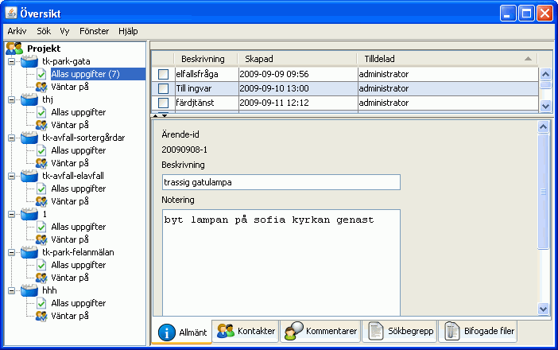

I fönstret översikt kan du se alla ärenden i de olika äendetyper som du är knuten till. Du väljer ärendetyp i panelen till vänster och sedan ärende i listan som visas. Informationen om ärendet under fliken Allmänt visas som standard, men du kan naturligtvis välja att visa Kontakter m.m genom att klicka på flikarna.
